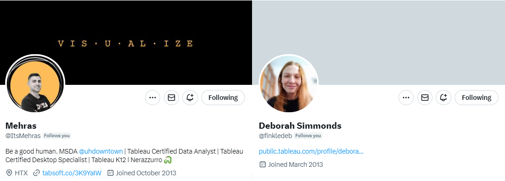
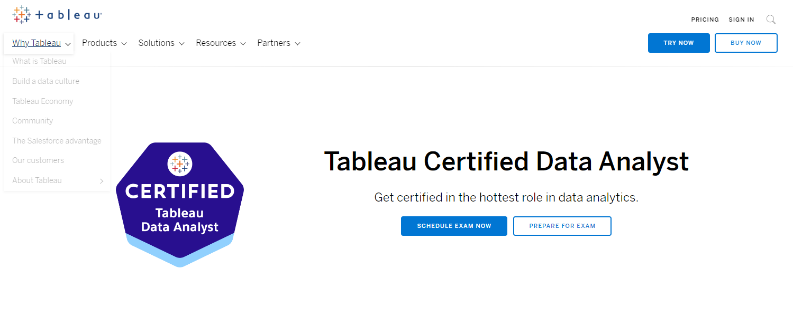
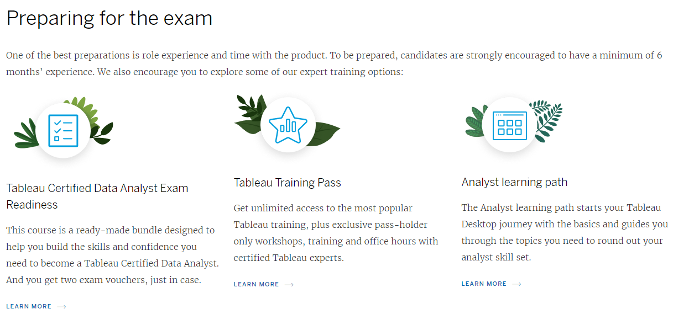
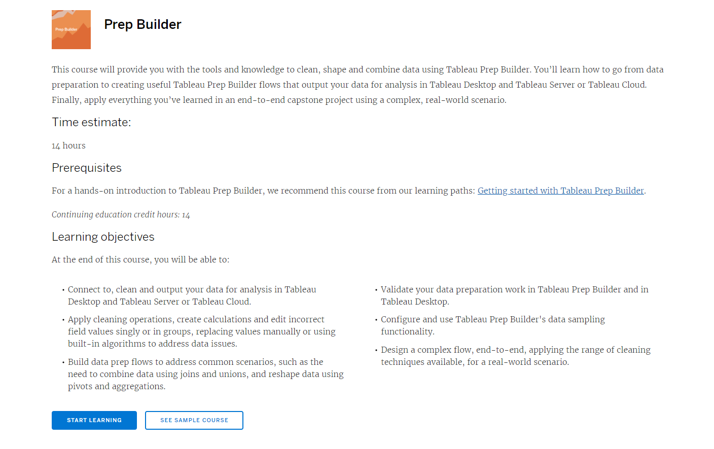
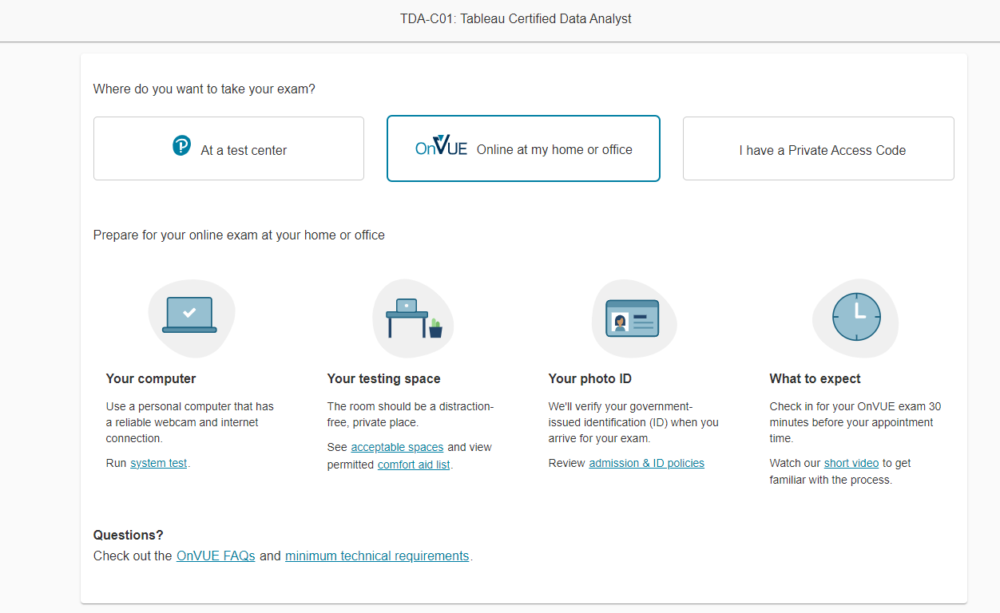
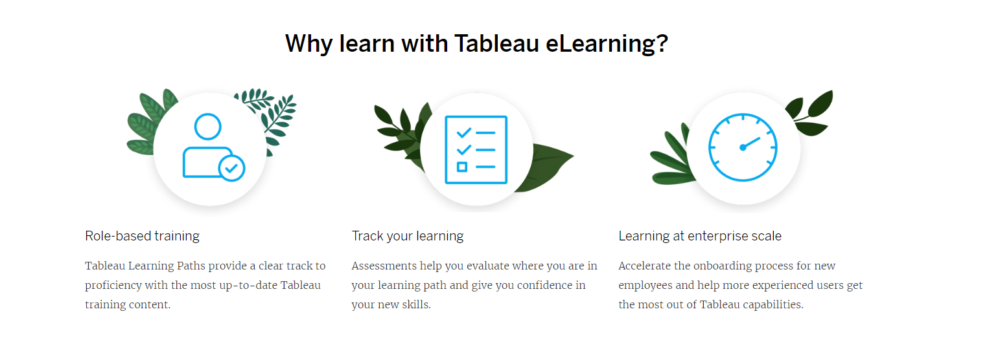
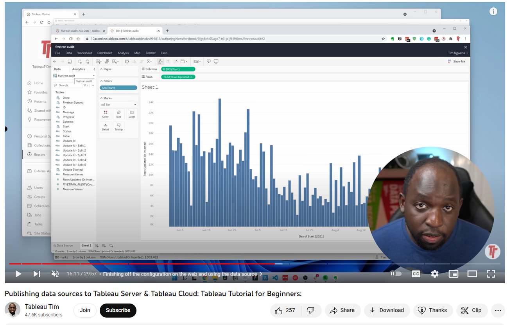

Tableau Data Analyst Exam Reflections (Deborah S & Mehras A)
Hi all,
I'm so pleased to have two fantastic community members join the blog today to share there own reflections on the Tableau Data Analyst exam. A good chunk of planning Deb & Mehras have put into the conversation today and its really my honour to be able to host it on the site.

Both have recently changed careers to work in data, although come from completely different backgrounds. They share a love of Tableau and the #datafam community. After successfully taking the Tableau Certified Analyst Exam this year, they have been kind enough to share their experience and resources to hopefully help others who are considering or already preparing to achieve this goal.CJ: Welcome both, lets start with desire. Why did you want to do the exam?

M: At the beginning of each year, we're required to set personal work goals and align them with a professional development plan. For me, I decided to take the Analyst Learning Path and began working through the e-learning courses, which took me roughly six months to complete. When I was about halfway through my courses, I told my boss that to become a certified Data Analyst, I had to pass an exam. D: Yes, we were also given the option at work to take this exam and I volunteered too. I've been working in my current role for just over a year, but I have no maths or data science background, and no MA or PhD. Having learned everything either on the job, e-learning, or self/datafam taught, I often struggle with imposter syndrome even though I’ve been using Tableau for some years now. It was so important to me to take this exam to try and overcome these feelings.CJ: That's an interesting point you raise on imposter syndrome. How was it emotionally for you before the exam and after?D: I find it very difficult to study under pressure. I really dislike exams in general. Work paid for this and I think I kept thinking, “oh no, what if I'm not capable of doing it? What if I'm not as clever as they think I am? They're going to find out now!” Yeah. I was really worried about that. And I think that is like the imposter syndrome trap.
M: Same - I felt a sense of responsibility to do well and pass it since they had invested in me. This was not the case with the Tableau Desktop Specialist exam, which I personally paid for.CJ: What were some of the ways that you tried to overcome some of those emotions?M: I actually took the Tableau Desktop Specialist exam one month before the Data Analyst exam to familiarize myself with the online testing environment and gain a better understanding of how it worked. Overall, it was a helpful experience and prepared me for what to expect.D: I structured my revision quite well, and gave myself an hour at the end of every workday to study. That was the minimum I would do and kept this up for a number of weeks!CJ: Did you have an accountability to help facilitate those learnings?D: I think I'm very lucky to have a really supportive team at work. But for me, my accountability buddy was the fact that I'm trying to challenge myself to reach outside my comfort zone.M: I actually didn't have an accountability buddy, but my main motivation was to learn new things so that I can better support my department with all the technical Tableau questions. And now that more people in our team are working with Tableau, I really want to make sure I'm able to support everyone as much as possible.CJ: Mehras, When you came to preparing for the exam, did you split some of your learnings by exam section?

M: I actually took the "Prep Builder" course on Tableau eLearning specifically to prepare for Domain 1, which is all about connecting to and transforming data.

I mainly focused on the modules from the Analyst Learning Path of eLearning for Domain 2 (Explore and Analyze Data) and Domain 3 (Create Content). But honestly, I learned a lot just by doing my work projects (I'm lucky that I get to work with Tableau a lot), participating in community projects like Back 2 Viz Basics, Preppin’ Data, and Makeover Monday, and following the #Datafam on Twitter to learn about new tricks and tips. I also watched all of Andy Kriebel's YouTube shorts (like 84 videos) and created all those vizzes, which not only helped me learn new tips but also gave me the confidence to tackle the hands-on section of the test.For Domain 4, I learned a lot from the eLearning course and got to practice everything I learned at work since we have access to Tableau Cloud. But no worries if you don't have access, you can always get a free trial.CJ: Which part of the exam were you most excited or worried about?M:I was actually pretty excited about the Tableau Prep questions and the hands-on part of the exam. But if I had to choose, I'd say I was most worried about the Tableau Server questions. I haven't had as much experience with that part.CJ: How does preparing for a closed book desktop exam compare to the real-world application?D: Oh, well it doesn't, I don’t know about you, but I Google everything. But I have noticed recently, since I've done it, that I've become a little bit faster.CJ: What resources did you use? What were the best ones?D: I did a lot of practice tests beforehand to find the holes in my knowledge, similar to how we approached the Alteryx certification at JLL, trying the test first because it's free and helps to identify where there are gaps in your knowledge.M: How did you come across those practice tests? I mostly used the e-learning and YouTube videos. I think your approach is really effective, and it reminds me of the diagnostic tests that I used to give to my students. Looking back, I wish I had tried something like that before taking exams myself.D: Most of the resources I used were passed to me by #datafam member Jessica Haire, who encouraged me to try the practice tests by Lukas Halim and sent me this link to his learning site.He provides plenty of free resources, and it is worth trying the desktop specialist practice tests too to refresh your knowledge.This site also contains a Tableau Certified Data Analyst Study Guide which is the same structure as Tableau's schedule but includes links to resources to learn each section. This makes it much quicker to find study materials when necessary. What videos did you use instead?M: About four or five days before the exam, while I was reviewing the material, I came across a YouTube channel called Discover Analytics. The more videos I watched, the more comfortable I became with the content. The channel has a "Certified Data Analyst Exam Prep Playlist" with 10 great videos that cover exam domains with examples, exam tips, and some bonus test prep questions.
D: Yes, I used the same video series! I was a little worried as I don't actively use Tableau Prep and although I do use tableau server I have far less administrative privileges now than in my previous job. So, I had to learn by reading around it quite a bit.I found these videos from Tableau really helpful in preparing for the exam. Note that you may need to log into Tableau to watch them.The Tableau Prep Builder InterfaceNew to Tableau Prep Builder? Start with these five fundamentalsIf I’d given myself more time to prepare for the exam, I’d definitely have learned joined in with Preppin' Data community challenges. I believe you can do a Tableau Prep trial for a month.M: One tip that I found helpful while preparing for the test was to pay close attention to the steps I took in Tableau to complete a task. For example, when I needed to create a calculated field, I focused on the steps involved and tried to memorize them as a list of steps.D: Tim Ngwena was talking about this in his guide to the Beta version of the test,Tableau Certified Data Analyst Certification: Exam & first impressions: Tableau Certificationhe mentioned something that I experienced which is that if you've been using Tableau for a while, it can work against you a little bit as you tend to just do familiar tasks automatically and you don't think about the steps.I agree that preparing for this exam does make you step back and question “Why am I doing it this way?” And then you start to think about the order of operations work.M: I have also experienced that, so it is important to be mindful that sometimes there are multiple ways to perform a task correctly. For instance, I can think of three different ways to create a new calculated field. This is important because Multiple Response questions on the exam require you to select two or more answer options. Multiple Response questions are one difference between the Analyst Exam and the Desktop Specialist Exam.CJ: Great thanks both some fantastic resources there. Do you have any tips on set-up?M: If you have the option to use a bigger laptop, make sure you do so! The exam states how you are only allowed to use one monitor. There are tests at the start to ensure that your computer and the physical environment are properly configured.D: Some work laptops may have data loss protection settings, so I’m glad I did the checks well in advance as the first check showed that I needed to remove a Cisco product to enable the software to download. Because I had watched a video by Tim Ngwena, about his experience of the Data Analyst Beta Exam I didn't just do the laptop preparation once. CJ: What about during the exam itself?D: I was appreciative to have a invigilator on hand in case I experienced any technical issues. After the influx of virtual meetings during the last few years, I think we are all used to webcam access. I wish I was able to read the questions out loud though, as I'm use to that when problem solving.M: It's great that they have a system for exam security, making the test fair to everyone. Just try to relax and focus on doing your best on the exam. You got this! CJ: Was the exam time intensive?D: It did seem so. I don’t know if previous exams have been easier or if they were just a bit more luxurious with the time.M: I had some extra time at the end of the Data Analyst test, even after reviewing all the questions in section three. The exam is in two parts including 45 multiple choice questions and 10 practical ‘lab’ questions, so you can divide your time in equal minutes as a rough guide.

CJ: It's also worth noting they ask you to sign into the exam early, otherwise this eats into the exam time. Its best loads the exam up to half hour early. Don't forget your ID!
CJ: Did you use the flag feature?M: Yes, I think it's a great feature that allows you to skip through some questions that you're unsure about and don't want to spend too much time on. Flagging questions is also useful because you might not be able to review all of them at the end of the test, but it's good to flag some so you can always come back to them if you have extra time.CJ: How was the hands-on lab?M: I found the hands-on lab the easier part of the exam. They have the dashboards and sheets to amend pre-set within the Tableau file. I went back and forth several times to ensure I wasn't missing anything. Also, it's important to remember to save your progress as you go!CJ: Which part of the exam content did you find most challenging?D: I found some of the wording of the multiple-choice sections difficult to understand. You had to really dig into the questions and go, right, what are they really asking? I also found the questions with multiple answers tricky, and found myself doubting my knowledge at these points.M:Some of the knowledge-based questions, especially the ones that require multiple selection and building a list of steps, can be a bit challenging. I think, it's a great idea to learn how to complete tasks in Tableau in different ways and to remember the steps because we tend to forget the steps after using the software for a while.CJ: What about the exam content itself?

M: e-learning was perfect to prepare for the different sections of the exam, but I remember when it got to Tableau Cloud and Tableau Server I wanted to supplement it with more resources.D: Tableau Tim has some great YouTube resources that may help others in the same situation as you, such as this one.Publishing data sources to Tableau Server & Tableau Cloud: Tableau Tutorial for Beginners:He has published some great beginners resources, it is well worth checking out his content to review any elements within the exam that you might be unsure of.

CJ: If you were to go back and do it again, what would you do differently in terms of preparation?D: I would have liked to have started preparing earlier!M: I would spend a bit more time on functions, especially calculated fields, and making sure that you're comfortable with FIXED LOD calculations as well.CJ: How did it feel to pass?M: After completing the test, I stepped out of the room and told my wife, "I'm not sure if I'll pass or not." While I felt confident about the hands-on parts, I was unsure about the rest. Approximately an hour after the test, I happened to check my email and was surprised to find that my score was already available. What a relief!D: I didn't think I'd passed either. And when I finished, my partner asked me how it went, and I told him that I couldn’t call it, I could not tell if I'd passed or failed. I was so pleased.CJ: Has it given you more confidence?D: Yes I think it has helped me gain a different type of confidence. I’ve noticed that due to the preparation and study I am completing tasks more quickly, and retaining focus a little easier, which is fantastic as these are issues that I’ve struggled with for a long time. I’ve also felt more confident to support others with their preparation for the exam, which is something I’ve really enjoyed.M: For me, the journey of learning new things was more important than the actual certification and exam. Passing the test and getting certified was a validation of the effort I put in, but it was not the ultimate goal. This is how I see it.CJ Round-Up:
Thank you both for joining the blog this week. I hope the conversation today brings others comfort around some of the type of content in the exam, some of the emotions felt both before, during and even after the exam as well as some tips around how best prepare. Take care and speak soon.
LOGGING OFF,CJ